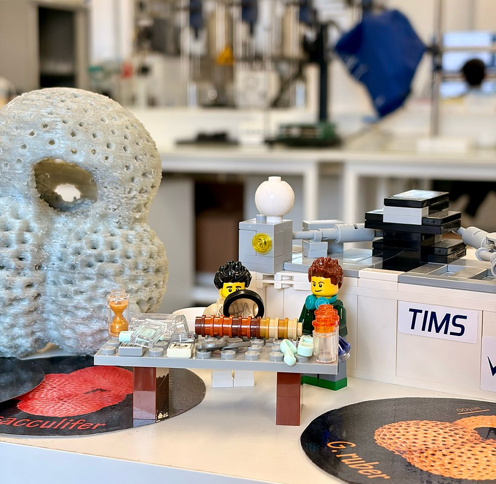

eCO₂-MorpH: MSCA Postdoctoral Fellowship Awarded to Dr. Jaime SUÁREZ-IBARRA to Advance Palaeoclimate and CO₂ Reconstructions

All members of Exocean are proud to announce that Dr. Jaime SUÁREZ-IBARRA, postdoctoral researcher at CEREGE, has been awarded a highly competitive Marie Skłodowska-Curie Actions Postdoctoral Fellowship (MSCA PF) under the Horizon Europe programme. Selected in the 2025–2026 call, which attracted more than 17,000 applications and had a success rate of only ~9.6%, this prestigious European research grant recognises the excellence and international impact of his work in paleoclimate and ocean–climate interactions.
Through his project eCO₂-MorpH, Jaime combines advanced morphometrics and artificial intelligence to refine Neogene geochemical proxies used to reconstruct past atmospheric CO₂ levels. By improving our understanding of major climate transitions such as the Miocene Climatic Optimum (16.7–14.7 millions of years ago, Ma), his research contributes to more robust climate modelling and strengthens our knowledge of long-term climate change.
Hi Jaime! For those who may not be familiar with it, could you explain what your MSCA PF project focuses on?
So, if I have to put it in a nutshell, my project focuses on planktonic foraminifera, marine single-celled microorganisms that produce a carbonate shell, which act like time-capsules for past oceanic conditions. These shells can be analysed for a wide array of aspects such as size, weight and geochemical composition. Based on certain isotopic systems (like those of the element boron — δ¹¹B), we can reconstruct past seawater pH and therefore estimate atmospheric CO₂. However, the complex evolutionary patterns of life can hinder our reconstructions, as ecological (habitat) and morphological (shell shape) changes affect the interpretation of this important geochemical data. With eCO₂-MorpH I aim to track these changes, refining the interpretation of geochemical analyses and thus delimiting boundary conditions (like the CO₂) for the Miocene Climatic Optimum (16.7–14.7 Ma). Knowledge of this ancient climate state is crucial to enable climate modellers to work with new and more accurate projections of past climate, which can then inform policymakers about our immediate future.
How does being awarded an MSCA PF impact you at this stage of your career?
Having a MSCA PF means I am on my way to being an independent researcher and have my own research group at a renowned European institute (like CEREGE, for instance). It represents an enormous step in the process and reassures me that my research path is on track. While at CEREGE I will be working with Dr. Thomas CHALK but the MSCA PF will allow me to visit and carry on scientific research at two other world-leading institutions in the United Kingdom: University College London and University of Southampton to work with professors Bridget WADE and Thomas EZARD, respectively. On a personal note, I am extremely delighted to have been selected this year as the 2025–2026 MSCA Postdoctoral Fellowship call was historically competitive.
If you had one piece of advice for postdocs thinking about applying, what would it be?
My advice is to start thinking on the project by March (so get on it now!) and start writing no later than May, as the summer break usually means people are away from work some time, and you will benefit from having more time to reflect on the details of a near-completed draft.
Last but not least, why does it matter for Exocean?
In Exocean we study proxy (a proxy is something measurable, which we can connect to a real world environmental variable, like temperature, acidity or biological activity) development as one of our main research axes, trying to neatly tie the messy world of biology and oceanography with environmental variables to understand the natural processes. My MSCA project will be transformational for this theme, interrogating in detail the precise moments and impacts of speciation on our environmental data archives. This has implications not only for the geological past, but for the modern fields of ecology and evolution.
Discover more about Jaime's work: